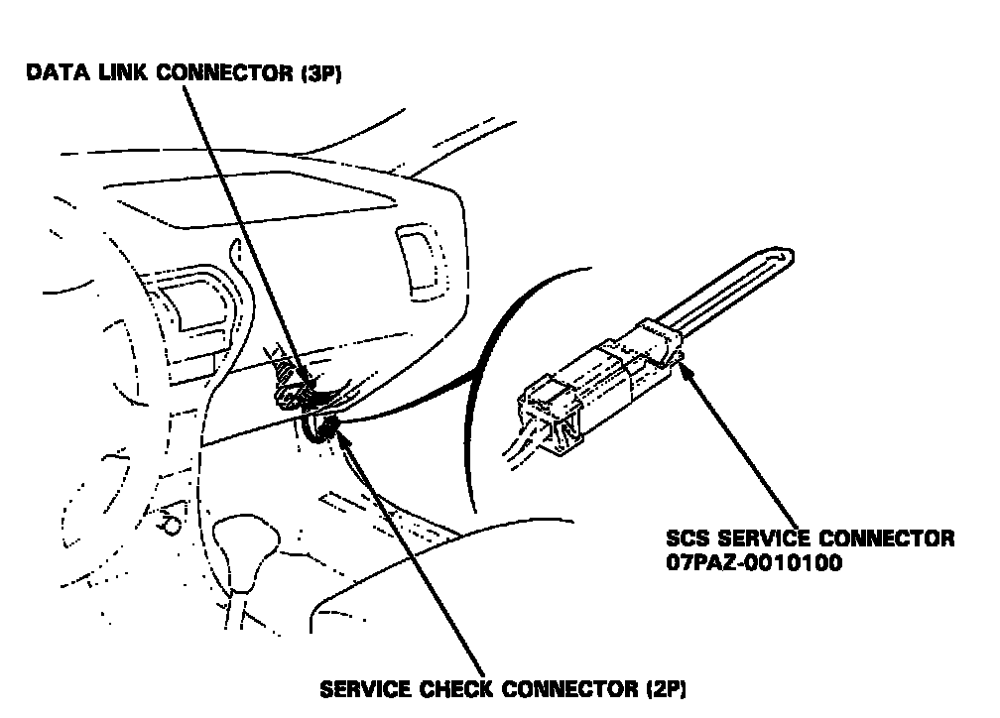
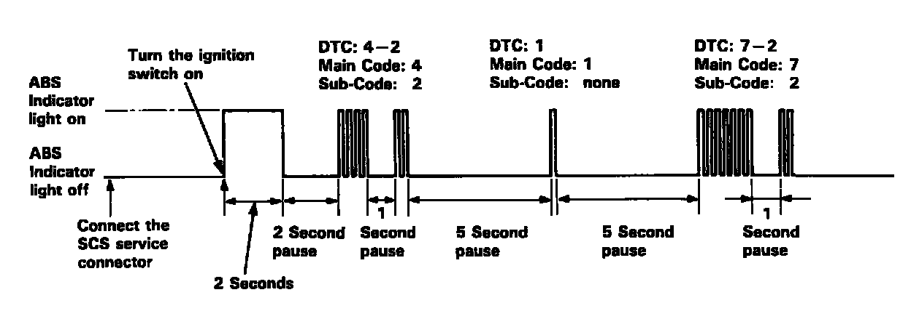
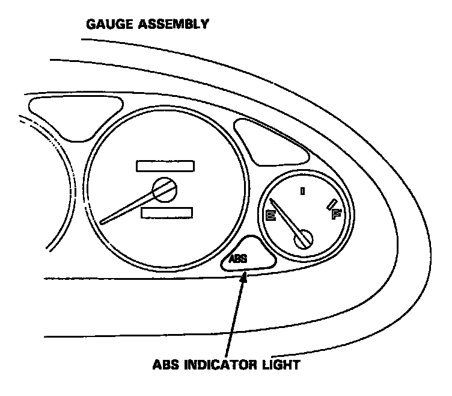

Displaying & Reading Trouble Codes
Data Link Connector:

1. Connect the SCS service connector to the service check connector under the right side of the glove box.
2. Turn the ignition switch ON, but do not start the engine.

3. Record the blinking frequency of the Anti-lock Brake System (ABS) indicator light. The blinking frequency indicates the Diagnostic Trouble Code (DTC).
NOTE: Check the DTC carefully and record it. The memory of the DTC is erased if the connector is disconnected from the ABS control unit.

- Turn the ignition switch ON. The ABS indicator light comes on for two seconds to check the bulb.
- The ABS control unit can memorize three DTCs (one, two or three problems).
- If you miscount the blinking frequency or if you recheck the blinking frequency, turn the ignition switch OFF then turn it ON to cycle the ABS indicator light again.
4. Remove the SCS service connector.
NOTE: The Malfunction Indicator Lamp (MIL) will stay on after the engine is started if the SCS service connector is connected.
5. Remove the Anti-lock Brake System (ABS) B2 (15 A) fuse in the under-hood ABS fuse/relay box for at least three seconds to erase the ABS control unit's memory.